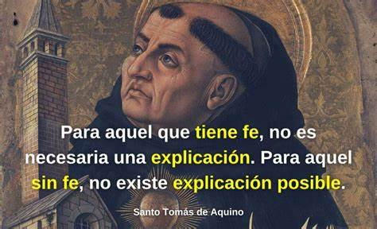

Santo Tomas de Aquino
Tomás de Aquino fue un teólogo, doctor de la Iglesia, fraile dominico, sacerdote católico y uno de los filósofos más influyentes del escolasticismo, que ejerció una notable influencia en la teología cristiana, sobre todo en la Iglesia católica. Nació en el reino de Nápoles, cerca de la actual provincia de Frosinone, en el año 1225. Fue el menor de once hermanos.A los 16 años dejó la Universidad de Nápoles, donde había estudiado con los dominicanos y franciscanos, que a su vez había representado un desafío para el clero del momento. Tenía la intención de continuar su formación dominicana, lo que no agradó a su familia. De hecho, los biógrafos de Tomás de Aquino cuentan que su familia decidió encerrarlo durante más de un año en el castillo de Roccasecca, en donde había nacido. Esto era para evitar su ingreso en dicha orden.

Su filosofia
La filosofía de Tomás de Aquino se basa en la razón y en la fe, combinando elementos de la filosofía griega y la teología cristiana. Su pensamiento ha sido muy influyente a lo largo de la historia de la filosofía. En el centro de su filosofía está la idea de que la razón humana puede alcanzar la verdad y que esta verdad puede coexistir con las verdades reveladas de la fe cristiana.Para Tomás de Aquino la filosofía y el resto de las ciencias descansan solamente en la luz natural de la razón. Dios es el principio y el fin de todas las cosas. Sus famosas «cinco vías» intentan demostrar la existencia de Dios a través de la razón. Cada vía comienza con una observación del mundo natural y concluye que debe existir un primer motor o ser supremo que ha puesto todo en movimiento.
Como impacta nuestra vida
El legado filosófico de Aquino es vasto y relevante en la actualidad. Su enfoque en la ética, la política y el pensamiento lógico y científico ha dejado una huella perdurable en la filosofía occidental. Su pensamiento sigue siendo una fuente de inspiración y su influencia continúa en el presente. Sus ideas siguen siendo relevantes en la actualidad y han influido en la metodología científica y en nuestras concepciones de la moral y el gobierno. Tomás de Aquino es considerado uno de los filósofos más influyentes de la historia y su legado perdura en el pensamiento humano.
